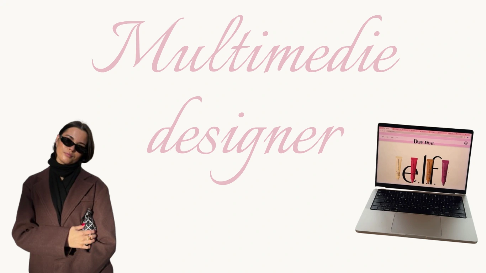
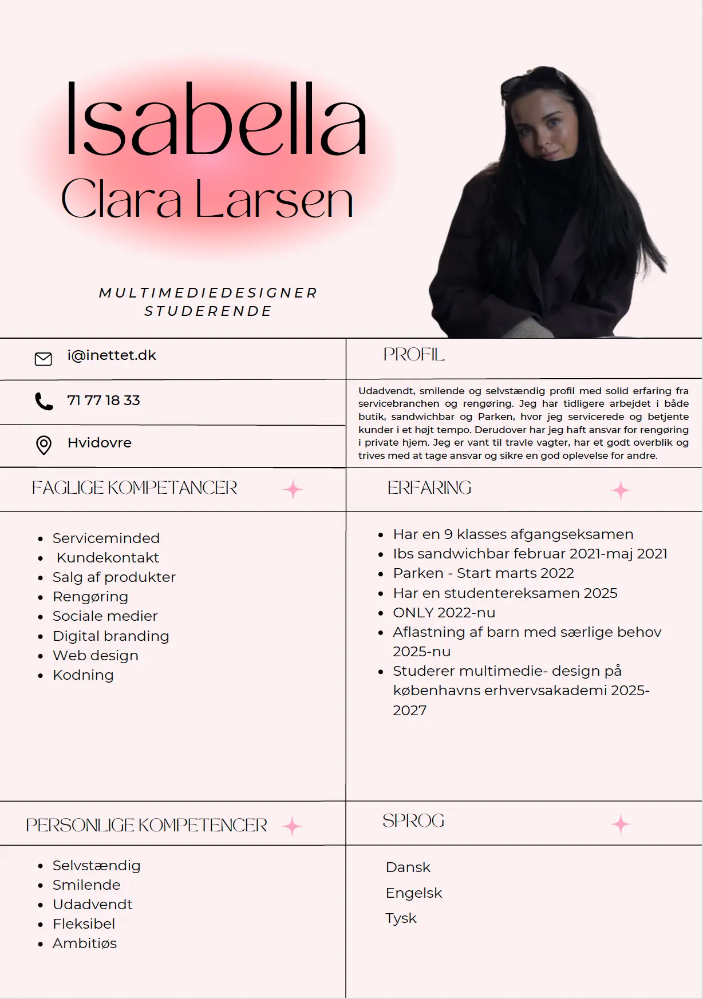
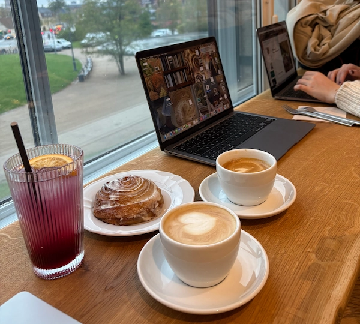

Om mig
Hey! Jeg er glad for du ville læse om mig. Jeg er multimediedesignstuderende med interesse for digitalt design og UX. Som person er jeg udadvendt, nysgerrig og arbejder struktureret med fokus på både æstetik og funktion. I mine projekter lægger jeg vægt på detaljen og på at skabe overblik i designprocessen, samtidig med at samarbejde og god kommunikation er vigtige for mig. For mig handler godt design om at skabe digitale løsninger, der ikke kun ser godt ud, men også giver mening for brugeren.

Mit 1 semester
På 1. semester har jeg opnået en grundlæggende forståelse for multimediedesign og den digitale designproces. Jeg har lært at arbejde med mobile first-design, responsive layouts og brugeroplevelse samt at omsætte idéer og wireframes til færdige digitale løsninger. Derudover har jeg fået erfaring med HTML, CSS og grundlæggende JavaScript til at skabe simple, interaktive funktioner.
